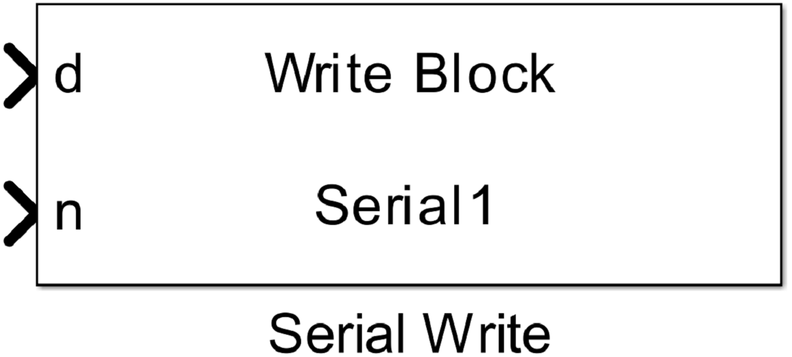
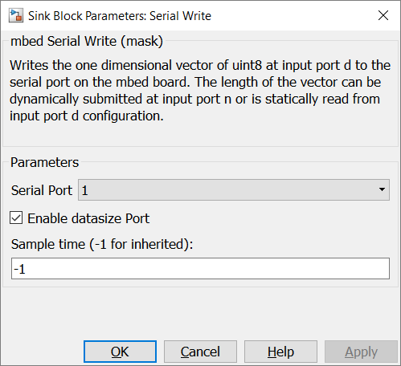

5.1.4. Serial Write Block
5.1.4.1. Description
Writes the one dimensional vector of uint8 at input port d to the serial port on the mbed board. The length of the vector can be dynamically submitted at input port n or is statically read from input port d configuration.
{kind=link}
5.1.4.2. Data Type Support
The input port d expects an uint8 data type and input port n expects an uint32 data type
5.1.4.3. Parameters Dialog Box
Serial Port
specifies an internal used serial port number. It is used to generate unique instance names when more UARTs are used in the same model and to tie config, read and write blocks together.
Enable datasize Port
When this check box is checked the optional input port n is enabled.
Sample Time
specifies the time interval between samples. To inherit the sample time, set this parameter to -1.
5.1.4.4. Example
In the example an input pin is read in by an Digital Input Block. This value is written to a pin by an Digital Output block.

5.1.4.5. Code Generation
Instance names of mbed classes are created by concatenating model name (, submodelnames) and block name (<Model Name>_(<Subblock Name>_…)<Block Name><Serial Port>). Space and minus characters are substituted by underscore (‘_’) characters.
Step Function
creates the following block in void <Model Name>_step(void) function
#if DEVICE_SERIAL_ASYNCH
const uint8_t* ptr = (const char*)&rtb_DataTypeConversion;
int len = rtb_Switch;
<instance name>.write(ptr, len, 0, 0);
#else
const char* ptr = (const char*)&rtb_DataTypeConversion;
const char* end = ptr + rtb_Switch;
while (ptr != end) {
if (<instance name>.putc(*ptr++) == EOF) {
break;
}
}
#endif
When the mbed target has a SERIAL_ASYNCH in “device_has” property in target.json, DEVICE_SERIAL_ASYNCH is defined. In this case sending data is interrupt and/or DMA controlled.